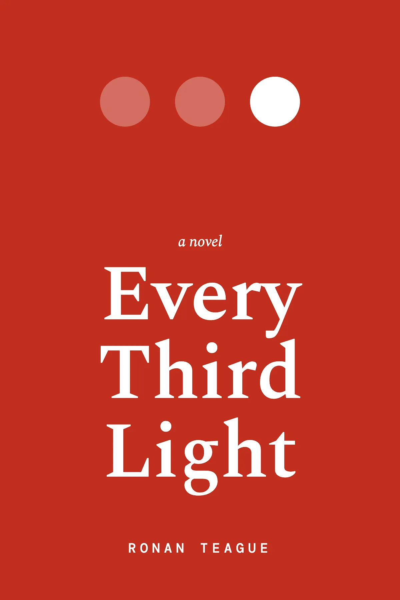
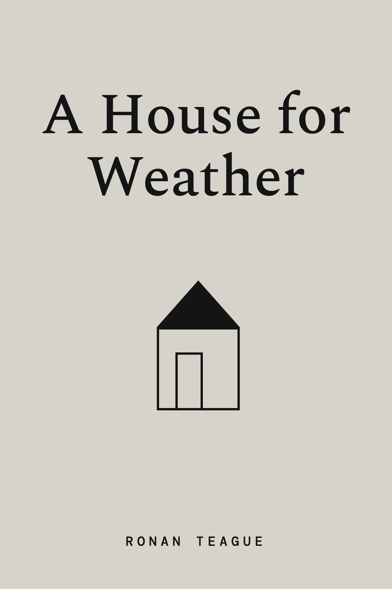
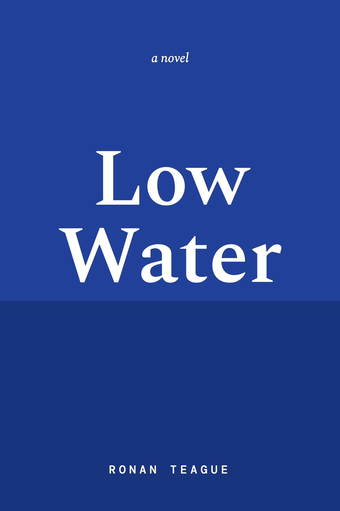
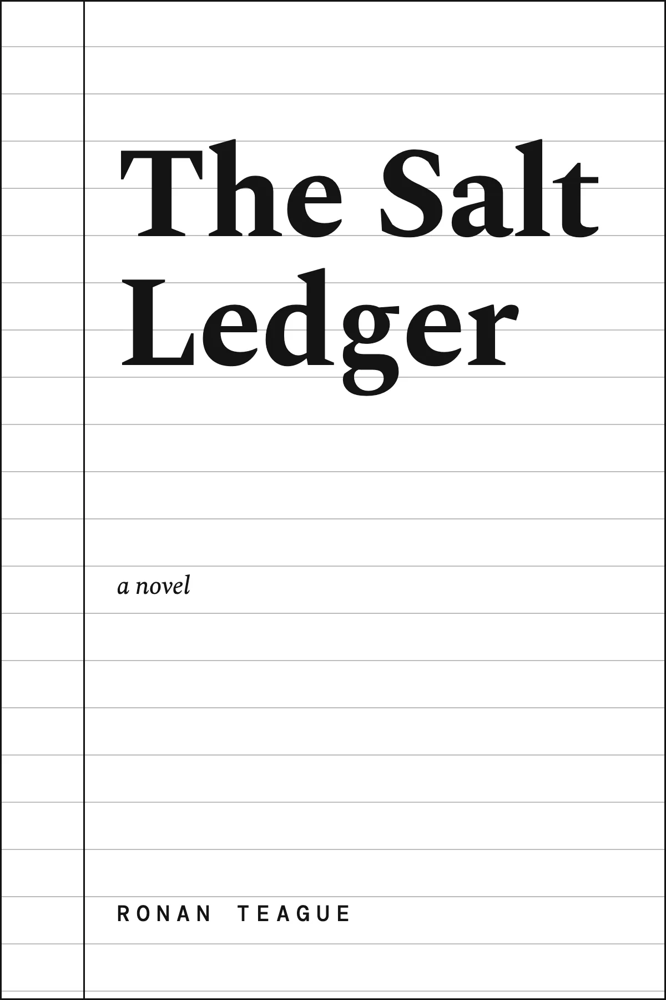
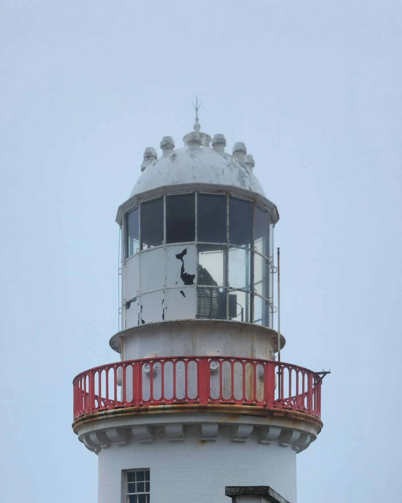
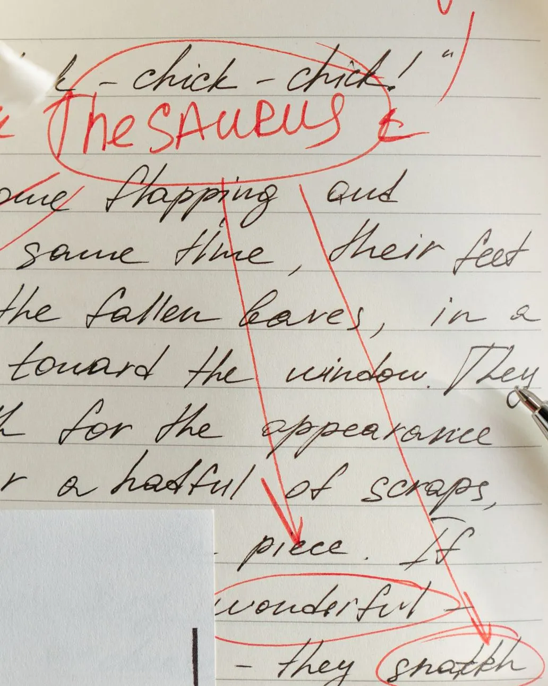

A novel · out Thu 15 Apr 2027
March 1994. The last keeper of the Inis Corran light and her son are shut in the tower by a storm on the night it goes automatic.
ii
3 novels, 2018 to 2023. All in paperback.
Three novels, all still on the shelf at Wren & Page in Kinsale.

2023
A widower rebuilds the house his wife designed, one storm season at a time.
Paperback €12.99Order ↗

2020
Two brothers and a boat they cannot agree to sell, over one summer of spring tides.
Paperback €10.99Order ↗

2018
A radio officer logs the ships he hears and the one he never does. Written on night watches at Valentia.
Paperback €10.99Order ↗
iii
Chapter one, page one
In March 1994 the Inis Corran light goes automatic after a hundred and forty years. Nuala Hegarty, its keeper at fifty-eight, and her son Declan, the Irish Lights attendant sent to switch it over, are shut in the tower by a storm for its last night.
It is a novel about a mother and son who have not said much to each other in twenty years, and a light that flashes in groups of three.
“I have not been able to stop handing it to people.”
Maura Toal, Wren & Page, Kinsale

iv
The copyright page
First published in Ireland on Thursday 15 April 2027 by Quay Street Books, Cork.
Copyright © Ronan Teague, 2027. The moral right of the author has been asserted.
Hardback, 288 pages, €22.99
Ebook, €8.99
ISBN 978-1-917000-14-7
Inis Corran and everyone on it are invented. The weather is not.
Wren & Page in Kinsale has signed copies, free to reserve.
v
6 dates, April to June
Six readings, each with questions after, about an hour. Tickets from each venue; the link shows where it is.
Reading group? He joins one by video each month. Write to hello@ronanteague.ie.
vi
Monthly, first Sunday. 3,100 readers.
A letter on the first Sunday of the month: what I’m writing, what I’m reading, the next reading near you.
One email a month. An unsubscribe link in every one.

vii
The back flap
Ronan Teague was born in 1992 and spent six years as a watch officer at Valentia Coast Guard radio station, where he wrote The Salt Ledger on the night watches.
He has written full time since 2018. Every Third Light is his fourth novel.
He lives in Kinsale, a short walk from Wren & Page, and answers his own email.
Book clubs and readings: hello@ronanteague.ie